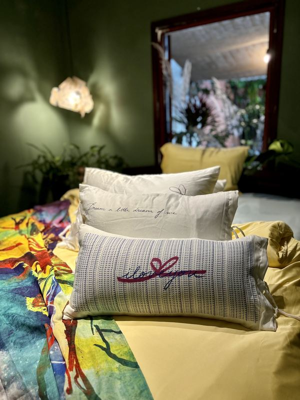

Không biết nên gọi “making bed” bằng tiếng Việt là gì cho đúng. Dọn giường? Xếp chăn? Trải lại ga? Chưa từ nào trúng cả, vì “making bed” không hẳn chỉ là dọn dẹp.
Đó là khoảnh khắc khi thức dậy thấy mình đang vuốt lại tấm ga, đập phẳng cái gối, xếp lại cái chăn, đặt em thú bông ưa thích đâu đó trên giường sao cho thật xinh… Một việc rất nhỏ, làm trong im lặng, không cần ai khen.
Nhưng lạ là khi làm xong, ngắm nghía cái giường xinh xắn, gọn ghẽ, thấy đầu óc cũng nhẹ bẫng. Rồi nữa, khi tối về nhìn chiếc giường đã được “chăm” từ sáng, tự nhiên muốn nằm xuống sớm hơn.
“Chắc là making bed không cần được dịch ra tiếng gì khác, vì đó đơn giản là cách mình đối xử tử tế với chính giấc ngủ của mình mỗi ngày.”
Making bed có thể được gọi là niềm vui nhỏ để bắt đầu ngày mới. Và có lẽ, nó nên được gọi đúng như nó đang là thế.

Còn sau đó — chăm “người tình” thế nào
Lụa tre giống một tình bạn: càng được chăm nhẹ nhàng, càng mềm theo năm tháng. Nó chỉ xin bạn giữ vài thói quen nhỏ.
Nước mát, chế độ nhẹ. Giặt dưới 30°C. Nước nóng làm sợi co lại và mất đi độ bóng — thứ khiến lụa tre mát tay đến vậy.
Không thuốc tẩy, không nước xả. Lụa tre vốn đã mềm. Một chút nước giặt dịu nhẹ là đủ.
Phơi trong bóng râm. Nắng gắt buổi trưa làm phai những nét vẽ tay. Hãy phơi nơi thoáng gió, tránh nắng gắt và máy sấy nhiệt cao.
Mỗi món đồ của Mô đều kèm một tấm thẻ hướng dẫn giặt trong túi vải. Làm đúng như thẻ dặn, vải sẽ chỉ càng thêm mềm.